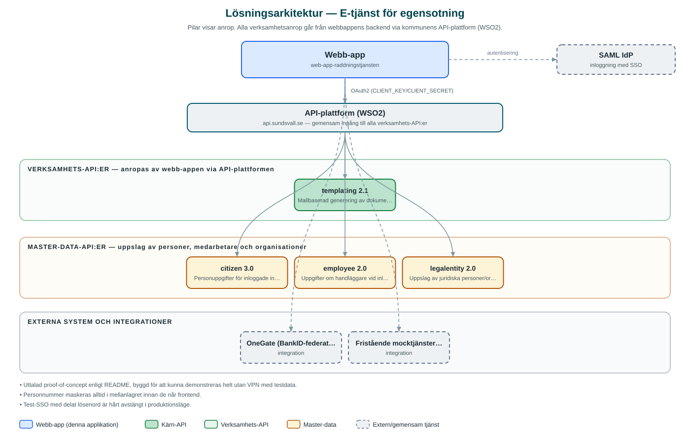

E-tjänst för egensotning
Prototyp av e-tjänst för Räddningstjänsten Medelpad där invånare ansöker om att få sota sin egen fastighet och handläggare hanterar ansökningarna.
Om applikationen
Tjänsten är en uttalad proof-of-concept för Räddningstjänsten Medelpad med fokus på flödet för egensotning, det vill säga tillstånd att själv sota sin fastighet. Invånaren loggar in med BankID, ser sina fastigheter och skorstensobjekt, bifogar underlag som kursintyg och skickar in sin ansökan.
Handläggare arbetar i en separat adminvy där de granskar ansökningar, fattar beslut om bifall eller avslag, ser besluts giltighetstid och kan återkalla beviljade tillstånd med motivering. Det finns även ärendestatistik och en områdeskontroll som säkerställer att fastigheten ligger inom kommunerna som omfattas.
Personnummer maskeras alltid i mellanlagret innan de når webbläsaren, och invånaren ser aldrig handläggarens identitet. Lösningen har tre driftlägen som gör att samma system kan köras som fristående demo med testdata, mot kommunens interna miljö eller i produktion med riktig BankID-inloggning.
Det här stödjer applikationen
- Ansökan om egensotning – Invånaren ansöker digitalt om tillstånd att sota sin egen fastighet och bifogar underlag som kursintyg.
- BankID-inloggning – Invånare identifierar sig med BankID (via OneGate i produktion, mock i demo).
- Handläggarvy med beslut – Handläggare granskar ansökningar, fattar beslut och kan återkalla tillstånd med motivering.
- Giltighetstid för tillstånd – Beviljade tillstånd har en giltighetsperiod som visas för både invånare och handläggare.
- Ärendestatistik – Översikt och statistik över inkomna och avgjorda ärenden för handläggare.
Teknisk dokumentation
Nedan beskrivs hur applikationen är uppbyggd, vilka API:er den använder och vad som krävs för att driftsätta den. Informationen är härledd ur källkoden och dess konfiguration på GitHub.
Arkitektur

Applikationen består av en webbaserad frontend (React 18 med Vite (inte Next.js)) och en backend (Node.js med Express 5 (BFF, TypeScript)) som utvecklas i samma kodbas. Verksamhetsanrop går via kommunens gemensamma API-plattform (WSO2) – frontend pratar aldrig direkt med underliggande system. Inloggning: BankID via OneGate (SAML) för invånare och SAML (SSO) för handläggare; mockinloggningar i demo- och utvecklingsläge. Övriga integrationer som förekommer i koden: OneGate (BankID-federation för invånarinloggning), WSO2 API-gateway, SAML IdP (handläggarinloggning), Fristående mocktjänster för Citizen/Employee i demoläge.
Teknikstack
- Frontend: React 18 med Vite (inte Next.js)
- Backend: Node.js med Express 5 (BFF, TypeScript)
API-beroenden
Applikationen konsumerar följande API:er via kommunens API-plattform. Versionerna är hämtade ur källkodens API-konfiguration.
| API | Version | Användning |
|---|---|---|
| templating | 2.1 | Mallbaserad generering av dokument, till exempel beslut. |
| citizen | 3.0 | Personuppgifter för inloggade invånare. |
| employee | 2.0 | Uppgifter om handläggare vid inloggning i adminvyn. |
| legalentity | 2.0 | Uppslag av juridiska personer/organisationer. |
Konfiguration och driftsättning
- APP_MODE styr driftläge (demo, ad, prod) och sätter standardvärden för hela stacken
- CLIENT_KEY och CLIENT_SECRET från WSO2 (används i ad- och prod-läge)
- Separata SAML-konfigurationer för invånare (OneGate) och handläggare
- CITIZEN_MOCK_BASE_URL och EMPLOYEE_MOCK_BASE_URL för fristående mocktjänster
- EMPLOYEE_LOGIN_PASSWORD för test-SSO med tre fördefinierade handläggarroller (admin/redaktör/läsare)
Noterbart ur källkoden
- Uttalad proof-of-concept enligt README, byggd för att kunna demonstreras helt utan VPN med testdata.
- Personnummer maskeras alltid i mellanlagret innan de når frontend.
- Test-SSO med delat lösenord är hårt avstängt i produktionsläge.
- Repot innehåller testfixturer med exempeldokument (kursintyg och besiktningsprotokoll).
Källkod
Källkoden är öppen och finns hos Sundsvalls kommun på GitHub. I källkodsförrådet finns även instruktioner för att klona, konfigurera och starta applikationen i egen miljö.